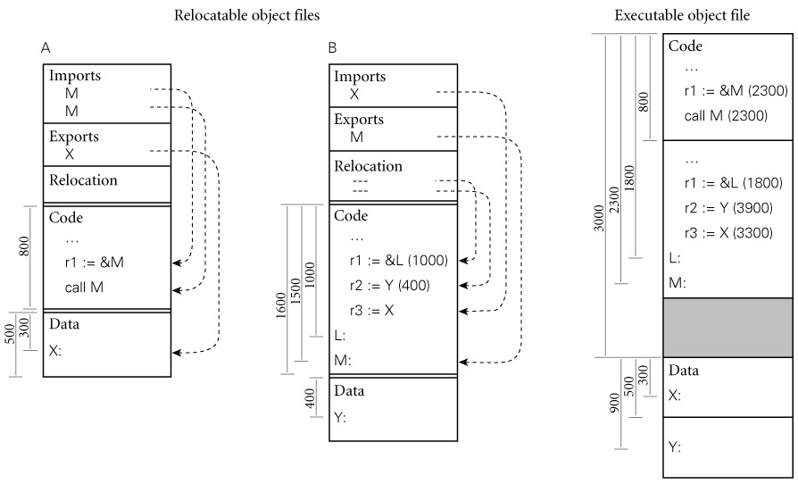

|
|
|
|
14.6 Linking
Most language implementations―certainly all that are
intended for the construction of large programs―support separate compilation:
fragments of the program can be compiled and assembled more or less
independently. After compilation, these fragments (known as compilation
units) are "glued together" by a linker. In many languages
and environments, the programmer explicitly divides the program into modules or
files, each of which is separately compiled. More integrated environments may
abandon the notion of a file in favor of a database of subroutines, each of
which is separately compiled.
On the CD The task of a linker is to join together compilation
units. A static linker does its work prior to program execution,
producing an executable object file. A dynamic linker (described in Section 14.7) does its work after the program has been
brought into memory for execution.
Each of the compilation units of a program to be linked must
be a relocatable object file. Typically, some of these files will have been
produced by compiling fragments of the application being constructed, while others will
be general-purpose library packages needed by the application. Since most
programs make use of libraries, even a "one-file" application
typically needs to be linked.
On the CD Linking involves two subtasks: relocation and the
resolution of external references. Some authors refer to relocation as loading,
and call the entire "joining together" process
"link-loading." Other authors (including the current one) use
"loading" to refer to the process of bringing an executable object
file into memory for execution. On very simple machines, or on machines with
very simple operating systems, loading entails relocation. More commonly, the
operating system uses virtual memory to give every program the impression that
it starts at some standard address. In many systems loading also entails a
certain amount of linking (Section 14.7).
14.6.1 Relocation and Name Resolution
|
|
Each relocatable object file contains the information
required for linking: the import, export, and relocation tables. A static
linker uses this information in a two-phase process analogous to that described
for assemblers in Section 14.5. In the first phase, the linker gathers all
of the compilation units together, chooses an order for them in memory, and
notes the address at which each will consequently lie. In the second phase, the
linker processes each unit, replacing unresolved external references with
appropriate addresses, and modifying instructions that need to be relocated to
reflect the addresses of their units. These phases are illustrated pictorially
in Figure
14.9. Addresses and offsets are assumed to be written in hexadecimal
notation, with a page size of 4K (100016) bytes.

Figure 14.9: Linking relocatable
object files A and B to make an executable object file. A's code section has been placed at
offset 0, with B's code section immediately after, at offset 800 (addresses
increase down the page). To allow the operating system to establish different
protections for the code and data segments, A's data section has been placed at
the next page boundary (offset 3000), with B's data section immediately after
(offset 3500). External references to M and X have been set to use the
appropriate addresses. Internal references to L and Y have been updated by
adding in the starting addresses of B's code and data sections, respectively.
|
|
Libraries present a bit of a challenge. Many consist of
hundreds of separately compiled program fragments, most of which will not be
needed by any particular application. Rather than link the entire library into
every application, the linker needs to search the library to identify the
fragments that are referenced from the main program. If these refer to
additional fragments, then those must be included also, recursively. Many
systems support a special library format for relocatable object files. A
library in this format may contain an arbitrary number of code and data
sections, together with an index that maps symbol names to the sections in
which they appear.
Within a compilation unit, the compiler enforces static
semantic rules. Across the boundaries between units, it uses module headers to
enforce the rules pertaining to external references. In effect, the header for
module M makes a set of promises regarding M's interface to its
users. When compiling the body of M, the compiler ensures that those
promises are kept. Imagine what could happen, however, if we compiled
the body of M, and then changed the numbers and types of parameters for
some of the subroutines in its header file before compiling some user module U.
If both compilations succeed, then M and U will have very
different notions of how to interpret the parameters passed between them; while
they may still link together, chaos is likely to ensue at run time. To prevent
this sort of problem, we must ensure whenever M and U are linked
together that both were compiled using the same version of M's header.
In most module-based languages, the following technique
suffices. When compiling the body of module M we create a dummy symbol
whose name uniquely characterizes the contents of M's header. When
compiling the body of U we create a reference to the dummy symbol. An
attempt to link M and U together will succeed only if they agree
on the name of the symbol.
Example 14.18: Checksumming
headers for consistency
|
|
One way to create the symbol name that characterizes M
is to use a textual representation of the time of the most recent modification
of M's header. Because files may be moved across machines, however
(e.g., to deliver source files to geographically
distributed customers), modification times are problematic: clocks on different
machines are often poorly synchronized, and file copy operations often change
the modification time. A better candidate is a checksum of the header
file: essentially the output of a hash function that uses the entire text of
the file as key. It is possible in theory for two different but valid files to
have the same checksum, but with a good choice of hash function the odds of
this error are exceedingly small.
|
|
On the CD The checksum strategy does require that we know when
we're using a module header. Unfortunately, as described in Section 3.8, we don't know this in C and C++: headers in
these languages are simply a programming convention, supported by the textual
inclusion mechanism of the language's preprocessor. Most implementations of C
do not enforce consistency of interfaces at link time; instead, programmers
rely on configuration management tools (e.g., Unix's make) to recompile files when necessary. Such tools are
typically driven by file modification times.
Most implementations of C++ adopt a different approach,
sometimes called name mangling. The name of each imported or exported
symbol in an object file is created by concatenating the corresponding name
from the program source with a representation of its type. For an object, the
type consists of the class name and a terse encoding of its structure. For a
function, it consists of an encoding of the types of the arguments and the
return value. For complicated objects or functions of many arguments, the
resulting names can be very long. If the linker limits symbols to some
too-small maximum length, the type information can be compressed by hashing, at
some small loss in security [SF88].
One problem with any technique based on file modification
times or checksums is that a trivial change to a header file (e.g.,
modification of a comment, or definition of a new constant not needed by
existing users of the interface) can prevent files from linking correctly. A
similar problem occurs with configuration management tools: a trivial change
may cause the tool to recompile files unnecessarily. A few programming
environments address this issue by tracking changes at a granularity smaller
than compilation units [Tic86]. Most just live with the need to recompile.
Design & Implementation
Type checking for separate compilation
The encoding of type information in symbol names works well
in C++, but is too strict for use in C: it would outlaw programming tricks
that, while questionable, are permitted by the language definition. Symbol-name
encoding is facilitated in C++ by the use of structural equivalence for types.
In principle, one could use it in a language with name equivalence, but given
that such languages generally have well-structured modules, it is simpler just
to use a checksum of the header.